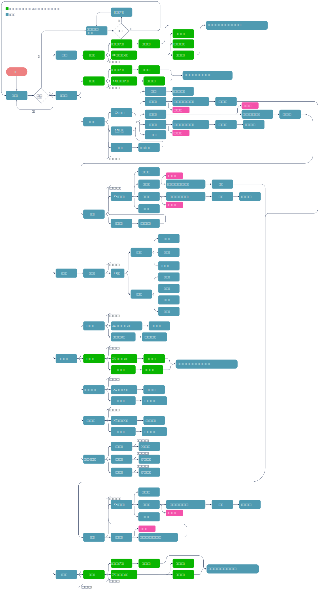
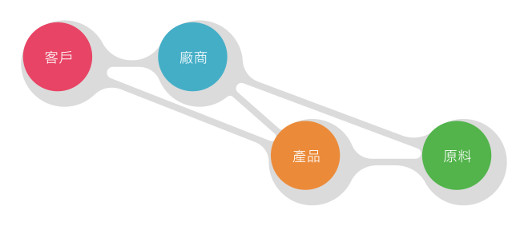
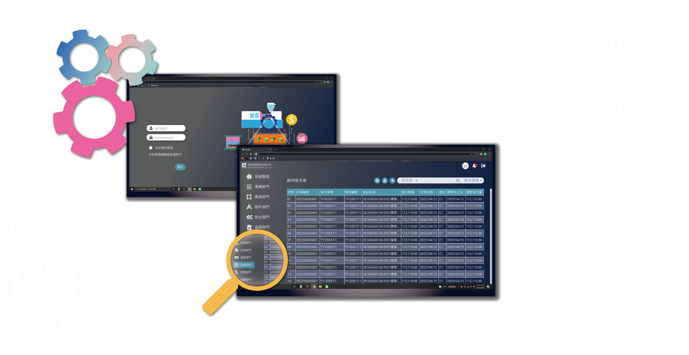
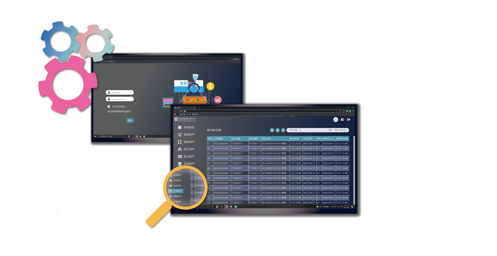

我們目前針對客戶最需要的生產管理流程進行優化設計，管理層反映:機台嫁動時數、產線狀況不透明、物料浪費、沒有物料資料系統、機台狀況不明造成人力調配不均等問題。
由於現在市面上ERP系統提供不同產業使用，功能完善卻無彈性，且人力短缺往往一個單位需要負責二至三個部門的業務，作業有時曖昧難以區分權限，且現有的ERP介面無有效且直覺的分類，初學的使用者總是被它龐大的架構與複雜操作流程搞得暈頭轉向，
我們針對生產流程與產線機台可視化進行優化與設計，目的是解決繁瑣操作與產線機台稼動透明兩大問題。
團隊夥伴
我們擁有一位出色的產品經理、一位才華洋溢的UI UX設計師、一位腦筋靈活的前端工程師和一位邏輯縝密的後端工程師。
身為UI UX我負責使用者訪談研究、使用流程設計、介面設計、操作測試與回饋。

為了改善機台與產線作業的管理，我們與射出機台的研發公司合作，將機台運作狀況與我們系統串聯，讓管理者可以即時了解廠區各機台目前情況，且針對生產管理部流程進行優化與設計，首先建立四大原始資料分別為:客戶資料、供應商(廠商)資料、
產品資料、物料耗材資料，此是系統的地基，任何環節都會從這四種資料中抓取。
流程的部分從"訂單建立"的環節切入，訂單開立→庫存查詢→匯出製令單，以上為我們此專案會進行的部分。


簡化過多無用的功能
01.現有ERP功能豐富但實際使用只有幾項
02.目標依客戶使用習慣進行設計
03.簡化操作上繁瑣的過程
無物料管理系統
01.目前此客戶並未購買物料管理權限
02.目前倉管以Excel管理物料庫存
03.目前物料資訊獨立系統外容易有斷層
無機台資訊
01.系統為管理生產流程
02.系統目標將生產管理與機台作業串聯
03.讓機台生產資訊即時且透明
目前我們建立客戶資料、廠商資料、產品資料、物料資料為原始資料庫，未來訂單流程、生產流程等都會從上述的資料庫抓取並聯動，讓整個生產流程一致性，同時因時程與客人需求，現階段以生產流程進行系統優化。

廠商資料、客戶資料、產品資料、原料耗材資料為整個系統流程最重要的四大地基，例如訂單資料中需要記錄哪位客戶與那些產品、產品資料中需記錄需要哪些原料、原料消耗品中有廠商聯繫方式和買賣記錄等。
當生產過程尚未進行時需建立上述資料，以供未來生產管理所用。

整個系統有四大資料庫，分別為產品維護庫、客戶資料庫、合作廠商資料庫、原物料資料庫。所有的生產流程都會從此抓取，例如訂單中需要輸入哪些產品，那麼使用者需要先建立每個產品的詳細資料，以供未來生產流程中任何單據都可抓取該訊息。

產品資料建檔
01.產品客戶所屬
02.已建立的產品可查詢是否有庫存
03.記錄射出的基本條件、模具基本資訊
產品所需物料資訊記錄
01.從物料、五金到出貨的包材都需記錄
02.物料消耗比率以及物料存貨倉別
03.目的是為了提供生產作業可依此領料
可從原料庫搜尋庫存狀態與匯入
01.物料可從已建檔的物料庫多筆匯入
02.若無此物料，需先到物料庫建檔
03.物料依照種類分類
製令單為所有生產作業的鑰匙，產線依此資料進行生產動作，分為兩大項:一種為訂單匯出的、另一種為手動建立。

製令單狀態
01.狀態分進行中、暫停、完成
02.所有單據建立後無法刪除只能暫停
03.目的是為了資料追溯
產品資料
01.製令單為單筆產品生產依據
02.輸入關鍵名稱或編號帶出該產品資料
03.自動從產品庫抓取產品物料明細
匯出單據
01.匯出採購單與銷貨單
02.根據產品所需物料進行採購或外包
03.產品庫存足夠則開銷貨準備出貨
老實說傳產轉型從十年前就該進行，現在台灣中小企業面臨的最大困境是"沒有訂單"，大家翹首以盼抗中趨勢能帶來轉單潮，然而企業只會往更優惠人力的東南亞進行發展，數位轉型究竟只是時代進化下所推出的噱頭?
還是真能帶領垂垂老矣的傳產突破叢危刷出耀眼的生機?
現階段我們將產線上機台稼動與系統進行串接，讓產線作業能夠更加透明，同時根據現有的ERP操作流程優化，目的是讓管理層能清楚現場流程中的不足與人力空置，並根據該客戶需求建立符合他們需求的系統，未來再將其他功能進行研究與優化。

 
